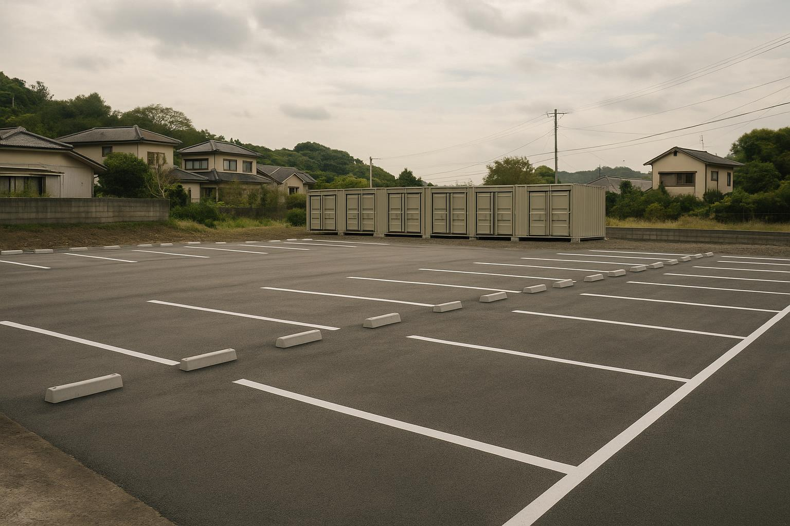

空き家を解体して更地にした後、駐車場やトランクルームとして貸し出す活用方法が注目されています
空き家を売却せずに手元に残す場合、「解体して更地にした後にどう使うか」で悩むオーナー様は少なくありません。この記事では、駐車場・トランクルームとしての活用方法と、収益・費用の目安を解説します。
「更地にしたものの、次にどう活用すればいいか分からない」というご相談は、TAMARIEにも数多く寄せられます。特に鹿児島市中心部や霧島市の主要駅周辺など駐車場需要のあるエリアでは、駐車場・トランクルームとしての活用が現実的な選択肢になります。
空き家跡地の活用方法として駐車場・トランクルームが選ばれる理由
解体して更地にした土地は、そのまま放置すると雑草管理や不法投棄のリスクを抱えることになります。一方で、新たに賃貸住宅を建てるには初期投資が大きく、立地によっては入居者確保が難しいこともあります。駐車場やトランクルームは、比較的小さな初期投資で始められ、更地の状態のまま収益化できる点が魅力です。
月極駐車場・コインパーキングとして貸し出す場合
立地が住宅密集地や駅・商業施設に近い場合は、月極駐車場としての需要が見込めます。整地・区画線・車止めの設置程度であれば比較的少ない費用で始められますが、契約管理や集金の手間がかかるため、駐車場運営会社への一括貸し（一括借り上げ）を選ぶオーナー様も増えています。台数が確保できる立地であれば、コインパーキング事業者への貸付も選択肢になります。
トランクルーム・収納スペースとして活用する場合
住宅街で駐車場需要が見込みにくい立地では、コンテナ型トランクルームの設置による活用も検討できます。荷物の保管ニーズは季節や引っ越しに左右されにくく、安定した稼働率が期待しやすい点が特徴です。ただし、建築基準法上の取り扱いや、設置するコンテナの規模によっては確認申請が必要になる場合があるため、事前の確認が欠かせません。
| 活用方法 | 初期費用の目安 | 月あたりの収益目安 |
|---|---|---|
| 月極駐車場（自主管理） | 数十万円〜（整地・区画線） | 台数×3,000円〜1万円程度 |
| 駐車場一括借り上げ | 業者負担のケースが多い | 相場よりやや低めだが手間なし |
| トランクルーム設置 | 100万円〜（コンテナ台数による） | 区画数×5,000円〜1万円程度 |
収益額は立地や周辺相場によって大きく変動するため、あくまで目安としてご覧ください。実際に検討する際は、複数の事業者から現地調査と収支シミュレーションを取り寄せることをおすすめします。
活用を始める前に確認しておきたいポイント
- 用途地域上、駐車場・トランクルームとして利用できるか
- 前面道路の幅や出入り口の位置に問題がないか
- 近隣との境界が明確になっているか（測量の有無）
- 契約形態（自主管理／一括借り上げ／事業者への貸付）ごとの収支の違い
- 将来的に売却・建て替えをする可能性があるか
解体・更地化とあわせて検討したいこと
建物を解体すると、住宅用地の固定資産税の軽減措置がなくなり、土地の固定資産税が上がる点には注意が必要です。駐車場やトランクルームとして活用することで、この税負担の増加分をある程度相殺できるケースもあります。